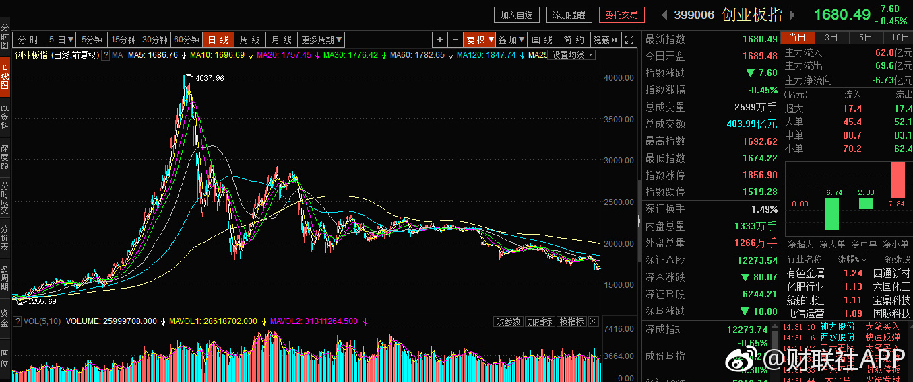
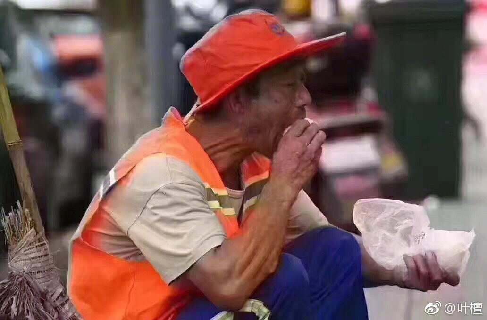

回复@wander0403:较大亏损？亲，你到底知不知道我们在干什么。我们买的十六个品种只有三个浮亏。浮亏大于2%的只有两只，这两只加起来仓位不到1.2%。亏损幅度不到0.1%。这么说，我说了半天其实是在跟一个什么都不知道的朋友扯淡呢。有点后悔。@ETF拯救世界:还有4天，又挖坑？每次都这样，怪不好意思的。
回复@wander0403:如果你的投资世界中，只有“满仓”和“空仓”两种选择，那么你说的没错。可惜，我的投资世界中有至少100种选择。我根据概率不同，投入不同的资金，进行资产配置。因为我知道，概率大不意味着一定赢，再小的概率也不意味着不发生。不要极端，不要过于自信，尊重市场，不要预测。@ETF拯救世界:还有4天，又挖坑？每次都这样，怪不好意思的。
回复@wander0403:你还是在讨论预测。这个弯你转不过来，根本就没法讨论。记住，我的原则是，不预测，只根据概率配置资产。做大概率会赢的事，同时对极端小概率事件也有准备。也就是发生任何事情都不会死，然后大概率赢。至于你说的预测涨跌，与我的思维模式不是一个层面的。@ETF拯救世界:还有4天，又挖坑？每次都这样，怪不好意思的。
跑差不多了。去哪儿了？追漂亮50去了~@财联社APP:WIND统计数据显示，截至2016年底，公募基金共持有571只创业板个股，持仓市值总计为2610亿元。但截至2017年上半年，创业板则共计有342只个股为公募基金所持有，持仓市值仅为1057亿元。 
回复@wander0403:以创业板现在的情况看，应该类比的是2008年的上证3000点而非6124点。3000点开始买错不错？以后来的1600点来看（又下跌50%），错了。但如果能一路买到1600点，将成本控制在2000点左右，似乎又没错。投资的未来是混沌的。做大概率正确的事，减少预测，减少预测指导行动，方成正果。@ETF拯救世界:还有4天，又挖坑？每次都这样，怪不好意思的。
千万别发明汽车，拉黄包车的骆驼祥子失业怎么办！//@叶檀:回复@莉香猫苑美国短毛猫:白痴理论，你们不扔垃圾，他们可以养花浇水，就是素质不高的人太多，服务无法升级。照你这么说，农民感谢你吃饭，以前用厕所东西当肥料，还要感谢上厕所？//@莉香猫苑美国短毛猫:不扔垃圾他们不就失业了@叶檀:少扔垃圾，少扔垃圾，用机器扫地，用机器扫地 
各位做投资，我的一点经验，一定要怀着一种近乎“慈善”的心态去做。首先要找到“好人”。也就是以后一定会好的品种，不能说随便一个烂股票你也去做慈善，那不行。过两天把你的钱卷走退市了。然后就是“行善”。什么叫行善，就是它落魄的时候去帮他。给他钱，越落魄给越多。那，因为他是好的品种，以后一定会起来，所以也许你帮他的钱很久不见回报。没关系，ok的。总有一天他发达了，几倍的还给你。就像现在所有人都在吹的“蓝筹股”，都在买的银行，都在追的白马。前几年中小创疯涨的时候，它们一动不动被人叫“大烂臭”的时候，如果你也能怀着慈悲心去帮帮他们，你现在也赚很多。所以，不要管别人怎么说。一个东西不停地跌，肯定是因为大多数人不看好，否则不会跌。这个时候你去听别人的，当然到处都是悲观情绪。最重要的是，你的心中要有一个标准，一个不会被任何人扰乱的标准。你就照着这个标准去帮那些落魄的品种。失意的时候，给他一口粥。他得意的时候，悄悄离去，留下一群见风使舵的人在他身边花团锦簇，岂不快哉？
回复@风萧索ma:我是按照创业板指从现在开始再下跌60%的幅度准备整个投资创业板策略的。您看这个幅度还行吗。如果还是小，我改成70%也没问题啊。//@风萧索ma:你有一个很大的问题，就是形而上学，现在抄海量ipo创业板的底，无离是送死。不能用历史去判断正在改革的A股市场。@ETF拯救世界:还有4天，又挖坑？每次都这样，怪不好意思的。
分别的日子不会太远了。@ETF拯救世界:$159920 可能是很多朋友第一个拿了一年多，赚了50%的品种。（有些朋友是40%）亏损的时候坚定持有很简单，盈利的时候呢，就没那么简单了。这一年多，一路鼓励大家坚定持有。到今天，总算有个好结果。
你们也来了。挺好，继续买。@全景网:【证金公司首次现身创业板十大股东】截至7月25日最新数据，证金公司出现在了两家创业板公司的十大股东之中，分别是昆仑万维和苏交科，二季度大举买入2312.53万股和962.49万股，持股占比2%和1.66%，而且证金公司成了昆仑万维的第一大流通股东。重要的是，这是证金公司史上第一次重仓买入创业板股票，并成为前十大股东。（券商中国）